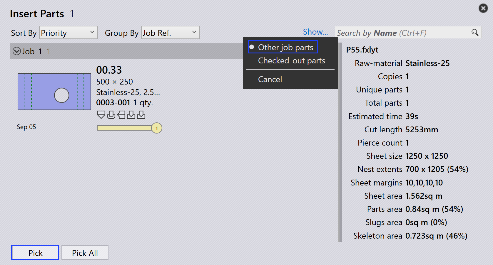

Umpacken
TruSmartCAM verfügt nicht über ein separates Umpack-Modul. Stattdessen wird das Umpacken über Optionen auf Auftragsebene gesteuert, die Flexibilität bei der Kombination von Teilen bieten.
Es gibt drei Möglichkeiten, wie das Umpacken durchgeführt werden kann:
-
Umpacken mit Mix parts from multiple Jobs.
-
Manuelles Umpacken mit dem interaktiven Assistenten Add Parts.
-
Manuelles Umpacken mit TecZone.
Umpacken mit mix parts from multiple Jobs
-
Um diese Option zu aktivieren, gehen Sie zu factory → settings → Job → Nest settings → Mix parts from multiple Jobs.

-
Wenn diese Option aktiviert ist, können Teile aus verschiedenen Aufträgen während der automatischen oder interaktiven Verschachtelung gruppiert werden, was zu einer kombinierten Packung oder Verschachtelung führt.
-
Zum Beispiel:
-
Auftrag-1 hat 1 Teil, Auftrag-2 hat 1 Teil.
-
Mit aktiviertem Mix parts from multiple Jobs kann TruSmartCAM diese 2 Teile in eine einzige optimierte Verschachtelung umpacken.
-


-
Ohne diese Option bleiben Teile aus jedem Auftrag während der Verschachtelung/Packung mit unterschiedlichen Layoutnamen getrennt.
-
Das Umpacken kann auch manuell ohne Aktivierung dieser Option durchgeführt werden.
Manuelles Umpacken mit dem interaktiven Assistenten „Teile hinzufügen"
-
Wählen Sie in der Layoutansicht die Teile aus, die Sie umpacken möchten.
-
Klicken Sie mit der rechten Maustaste auf das Teil und wählen Sie Add Parts… im Layout-Panel.

-
Folgen Sie den Anweisungen im Assistenten, um den Umpackvorgang abzuschließen.
-
Wählen Sie Show other job parts und fügen Sie diese dem aktuellen Auftrag hinzu.

-
Überprüfen Sie die Änderungen und bestätigen Sie das Umpacken.

Weitere Informationen finden Sie unter Add Parts.
Manuelles Umpacken mit TecZone
-
Öffnen Sie TecZone durch Klicken auf
 .
.

-
Klicken Sie in der TecZone-Oberfläche auf „Hinzufügen".

-
Ein neues Fenster erscheint, in dem Sie die umzupackenden Teile auswählen können. Klicken Sie auf Show… und wählen Sie dann Other job parts. Klicken Sie nach Ihrer Auswahl auf Pick.

-
Ein neues Fenster erscheint, in dem Sie festlegen können, wohin das Teil umgepackt werden soll.

-
Klicken Sie auf Save changes to TruSmartCAM und das umgepackte Layout steht in TruSmartCAM zur Verfügung.